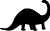

|  | home | info | tides | map |
|---|
Broome has the most significant collection of dinosaur tracks in the Western half of Australia. The tracks are believed to have been made by 4 types of dinosaurs during the Quaternary period. Etc.https://www.dinosaurcoast.org.au/ Palaeontoloty Report Broome Sandstone ABC - dinosaur-footprints-found-among-tourists-on-cable-beach |
| Image from "Dinosaurs of Australia and New Zealand and other animals of the Mesozoic era" by John A. Long |